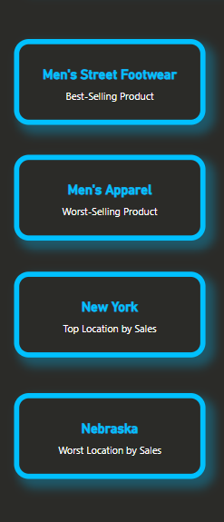

Adidas US Sales Dashboard
1. Introduction to the Dashboard
The Adidas US Sales Dashboard provides stakeholders with an in-depth analysis of key sales metrics, helping drive informed decision-making. By visualizing historical sales data, operational profitability, and product performance across different regions, retailers, and sales methods, the dashboard offers insights into consumer behavior, product demand, and retail strategies. Stakeholders can leverage this data to optimize sales tactics, improve operational efficiency, and identify growth opportunities across various markets.
2. Dashboard Breakdown
Filters
These slicers allow stakeholders to dynamically adjust the dashboard to focus on specific geographical regions, states, or cities. By narrowing down the data, decision-makers can analyze localized performance, making the dashboard a versatile tool for tailoring insights to different levels of geographical granularity.
KPI Cards

These KPIs provide a quick snapshot of both product and geographic performance. They highlight the best and worst-selling products, offering insights into which categories are driving revenue and which may require re-strategizing. Additionally, they showcase the top and worst-performing locations, offering valuable geographic insights for potential expansion or resource reallocation.
Sales Performance over Time
This line chart illustrates sales trends from January 2020 to December 2021, allowing stakeholders to track overall performance and identify seasonal patterns or growth periods. It can be drilled down for specific time periods, offering more granular insights, which can help pinpoint the best times to launch marketing efforts or adjust sales strategies accordingly.
Sales Distribution by Channel
The pie chart categorizes sales by method—online, in-store, and outlet. This insight enables stakeholders to optimize resources by focusing on the most profitable sales channels or expanding underperforming ones.
Retailer Profitability Analysis
This bar chart displays operating profit by retailer, with tooltips showing average operating margins. This helps identify which retail partners generate the most profit and where margins are highest, aiding strategic partnerships and contract negotiations.
Product Demand Overview
This bar chart breaks down the number of units sold across top product categories. It highlights product demand, enabling better inventory management and focused marketing on best-selling items.
3. In Closing
This dashboard provides a comprehensive overview of Adidas’ sales performance, offering valuable insights into product demand, retailer profitability, and sales methods. By utilizing these visualizations, stakeholders can make informed decisions to optimize marketing strategies, improve inventory management, and strengthen partnerships with high-performing retailers. The ability to drill down into specific regions, states, and cities further enhances the decision-making process, ensuring that resources are allocated effectively to maximize revenue growth.